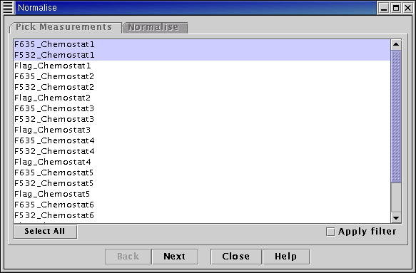
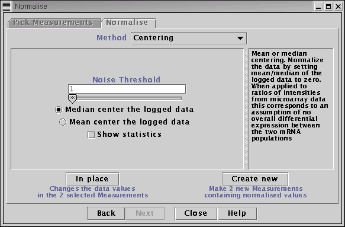

See the Plugin Commands help page for details on the commands offered by this plugin.
Centering of logged microarray data is one of the simplest normalisation methods and one of the first developed. It is typically applied to a ratio of intensities such as one might obtain from a two colour spotted cDNA microarray experiment. The underlying assumption is that, between the two mRNA populations being compared using the ratios, no overall differential expression has occurred, i.e. on average just as much up regulation has occurred as down regulation. This is equivalent to an assumption that the total amount of mRNA is the same between the two mRNA populations. If these assumptions do not apply to your data, e.g. there is a significant level of overall of differential expression between the two mRNA populations, then another normalisation method may be more appropriate.
If the assumption of no overall differential expression is valid then the average log ratio of mRNA abundances should be zero. The average log ratio of measured (raw, un-normalised) intensities may not be zero. This difference is due to bias, which the normalisation method attempts to eliminate. This is done by subtracting the average log ratio of intensities from all the log ratios, i.e. centering the distribution of log ratios over a mean value of zero.
Two different centering methods are provided within MaxD - mean and median centering. Mean centering sets the mean of the logged data to zero. Calculation of the average or mean of a quantity can be significantly affected by large outliers and may be an unreliable estimate of the center of a distribution. The median of data set is a quantity that is less affected by outliers and so is a more robust estimate of the center of a distribution. The median centering method sets the median of the logged data to zero. Due to the more robust nature of the median, median centering is the default (recommended) centering method.
Notes
The centering methods center the logged data that is given to them. The logarithms are taken within the normalisation method. If you wish to apply mean/median centering to ratios of intensities, you must calculate the ratios first (e.g. using the "Simple Maths" menu option on the "Transform" menu) before using the normalisation algorithm.
The centering normalisation methods return normalised logged data. All logarithms are natural logarithms, i.e. logarithms to base e.

Select Measurements to normalise from the list on the left-hand side of the panel.

Choose the centering method (mean or median). Choose threshold value - any raw data values below the threshold will be set to the threshold before taking logarithms. Choose whether to create new Measurements in the main table, or overwrite the Measurements selected with the normalised data.